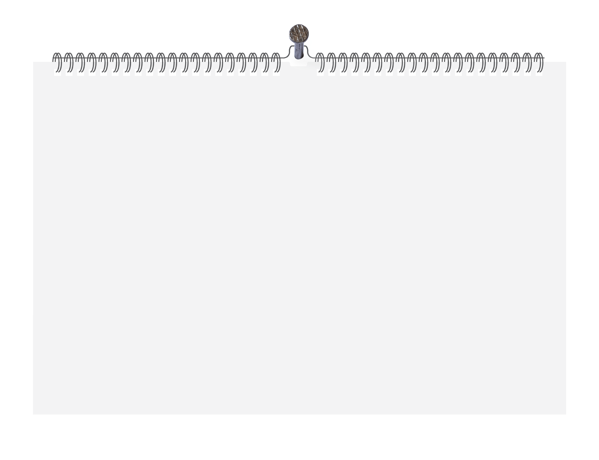
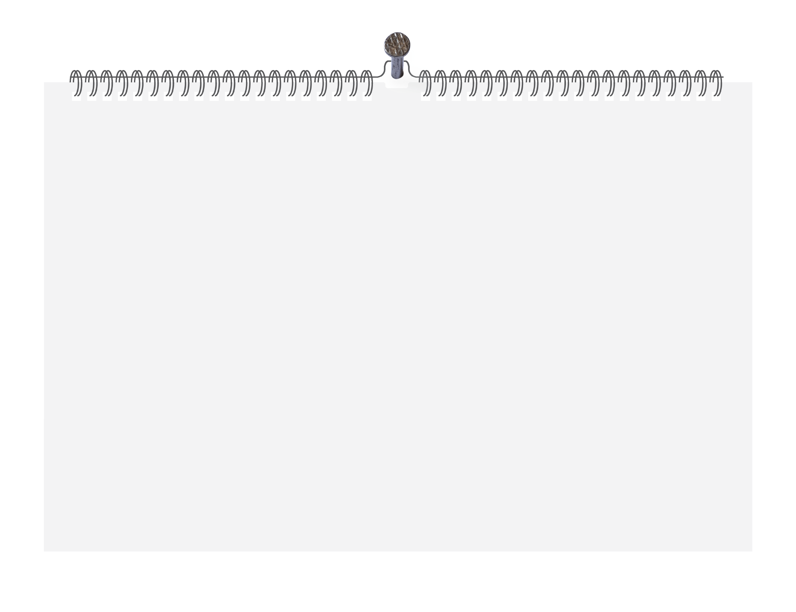

Sources
28% of North Carolina households remain burdened by housing costs • NC
Newsline. (n.d.). Retrieved April 24, 2025, from
https://ncnewsline.com/2025/01/17/28-of-north-carolina-households-remain-burdened-by-housing-costs/
AAA Fuel Prices. (n.d.-a). Retrieved April 24, 2025, from
https://gasprices.aaa.com/?state=NC
AAA Fuel Prices. (n.d.-b). Retrieved April 23, 2025, from
https://gasprices.aaa.com/?state=NC
All-Transactions House Price Index for North Carolina (NCSTHPI) | FRED | St. Louis
Fed. (n.d.). Retrieved April 23, 2025, from https://fred.stlouisfed.org/series/NCSTHPI
Are wages keeping up with inflation? | USAFacts. (n.d.). Retrieved April 24,
2025, from https://usafacts.org/answers/are-wages-keeping-up-with-inflation/country/united-states/
Bureau of Labor Statistics Data. (n.d.-a). Retrieved April 24, 2025, from
https://data.bls.gov/pdq/SurveyOutputServlet
Bureau of Labor Statistics Data. (n.d.-b). Retrieved April 24, 2025, from
https://data.bls.gov/pdq/SurveyOutputServlet
Bureau of Labor Statistics Data. (n.d.-c). Retrieved April 24, 2025, from
https://data.bls.gov/pdq/SurveyOutputServlet
Central NC small business owners impacted by tariff uncertainty. (n.d.).
Retrieved April 24, 2025, from
https://www.cbs17.com/news/local-news/wake-county-news/tariff-uncertainty-impacting-small-business-owners-in-central-north-carolina/
Charlotte egg prices nearly triple in two months. Some grocery stores limit
purchases, Charlotte Observer, The (NC), February 23, 2025, p21A. (n.d.). Retrieved April 23, 2025,
from
https://infoweb-newsbank-com.libproxy.lib.unc.edu/apps/news/document-view?p=AMNEWS&t=pubname%3ACHOB%21Charlotte%2BObserver%252C%2BThe%2B%2528NC%2529&sort=YMD_date%3AD&hide_duplicates=2&maxresults=60&f=advanced&val-base-0=prices&fld-base-0=Title&fld-nav-0=YMD_date&val-nav-0=2025%20-%202025&docref=news/19EEF6434896BB00
Charlotte-area Latino food distributors begin to feel impact of Trump’s tariffs
| WUNC. (n.d.). Retrieved April 24, 2025, from
https://www.wunc.org/2025-04-25/charlotte-area-latino-food-distributors-begin-to-feel-impact-of-trumps-tariffs
Consumer sentiment falls to lowest level since 2022. (n.d.). Retrieved April 24,
2025, from https://myfox8.com/news/consumer-sentiment-falls-to-lowest-level-since-postpandemic-inflation-peak/
Convening the Experts: Consumer Sentiment vs. Economic Indicators - Frank Hawkins
Kenan Institute of Private Enterprise. (n.d.). Retrieved April 24, 2025, from
https://kenaninstitute.unc.edu/kenan-insight/convening-the-experts-consumer-sentiment-vs-economic-indicators/
Coronavirus NC: Demand for gas at its lowest since 1993, prices drop to $1.76;/gallon
in North Carolina - ABC11 Raleigh-Durham. (n.d.). Retrieved April 23, 2025, from
https://abc11.com/nc-gas-prices-near-me-in-north-carolina/6084077/
Cost Of Living In North Carolina | Bankrate. (n.d.). Retrieved April 23, 2025,
from https://www.bankrate.com/real-estate/cost-of-living/in-north-carolina/#moving
di Giovanni, J., Kalemli-Özcan, Ş., Silva, A., Muhammed, |, Yıldırım, A., &
Yıldırım, M. A. (n.d.). Quantifying the Inflationary Impact of Fiscal Stimulus Under Supply
Constraints. Retrieved April 24, 2025, from
https://www.newyorkfed.org/research/staff_reports/sr1050.html.
Egg prices are a real problem. - So where are the solutions, News & Observer, The
(Raleigh, NC), March 4, 2025, p7A. (n.d.). Retrieved April 24, 2025, from
https://infoweb-newsbank-com.libproxy.lib.unc.edu/apps/news/document-view?p=AMNEWS&t=pubname%3ARLOB%21News%2B%2526%2BObserver%252C%2BThe%2B%2528Raleigh%252C%2BNC%2529&sort=YMD_date%3AD&fld-nav-0=YMD_date&val-nav-0=2025%20-%202025&hide_duplicates=2&maxresults=60&f=advanced&offset=61&val-base-0=prices&fld-base-0=Title&docref=news/19F1EDB43186BDD0
Egg prices spike: Raleigh shoppers finding eggs below national average. (n.d.).
Retrieved April 24, 2025, from
https://www.cbs17.com/news/local-news/wake-county-news/raleigh-shoppers-finding-eggs-below-national-average/
Eye on Economy NC | Consumer confidence at lowest point since August 2021, nonprofits
taking hits; tariffs, inflation cited - ABC11 Raleigh-Durham. (n.d.). Retrieved April 24, 2025, from
https://abc11.com/post/eye-economy-nc-consumer-confidence-lowest-point-august-2021-nonprofits-taking-hits-tariffs-inflation-cited/15954757/
Families to Receive Enhanced Benefits to Ensure Food Access | NCDHHS. (n.d.).
Retrieved April 24, 2025, from
https://www.ncdhhs.gov/news/press-releases/2020/03/30/families-receive-enhanced-benefits-ensure-food-access
February 2024 NC Economy Watch: How Will the Economy Land in 2024? | NC
Commerce. (n.d.). Retrieved April 24, 2025, from
https://www.commerce.nc.gov/news/the-lead-feed/february-2024-nc-economy-watch
Fermand, E., Kuhnen, C. M., Li, G., & Ben-David, I. (2024). Convening the Experts:
Consumer Sentiment vs. Economic Indicators - Frank Hawkins Kenan Institute of Private Enterprise.
Https://Kenaninstitute.Unc.Edu/, 70(8), 5607–5625.
https://doi.org/10.1287/MNSC.2023.00820
Foley, E., Advisor, F., & Hildebrand, A. (2021). COVID-19 and Housing Security:
Assessing Equity & Efficiency Across North Carolina’s Emergency Rental Assistance Programs.
https://hdl.handle.net/10161/22851
Governor extends evictions moratorium through at least January • NC
Newsline. (n.d.). Retrieved April 24, 2025, from
https://ncnewsline.com/briefs/governor-extend-evictions-moratorium-through-at-least-january/
Harris wants to stop grocery “price gouging.” Here’s why NC’s
food costs are still high, News & Observer, The (Raleigh, NC), August 22, 2024, p4A. (n.d.).
Retrieved April 24, 2025, from
https://infoweb-newsbank-com.libproxy.lib.unc.edu/apps/news/document-view?p=AMNEWS&t=pubname%3ARLOB%21News%2B%2526%2BObserver%252C%2BThe%2B%2528Raleigh%252C%2BNC%2529&sort=YMD_date%3AD&hide_duplicates=2&fld-base-0=alltext&maxresults=60&val-base-0=groceries&docref=news/19B1FA3669F79760
How Important is International Trade to North Carolina? | NC Commerce. (n.d.).
Retrieved April 24, 2025, from https://www.commerce.nc.gov/news/the-lead-feed/international-trade-nc
How many households in North Carolina spend too much on housing? | USAFacts.
(n.d.). Retrieved April 23, 2025, from
https://usafacts.org/answers/how-many-households-in-the-united-states-spend-too-much-on-housing/state/north-carolina/
HPU Poll: Inflation is Biggest Issue in North Carolina Households | High Point
University. (n.d.). Retrieved April 24, 2025, from
https://www.highpoint.edu/blog/2022/09/hpu-poll-inflation-is-biggest-issue-in-north-carolina-households/
HPU Poll: N.C. Registered Voters See Coronavirus as Major Threat to State, U.S. and
World Economies | High Point University. (n.d.). Retrieved April 24, 2025, from
https://www.highpoint.edu/blog/2020/07/hpu-poll-n-c-registered-voters-see-coronavirus-as-major-threat-to-state-u-s-and-world-economies/
HPU Poll: North Carolina Consumer Sentiment Drops Amid COVID|19 Pandemic | High Point
University. (n.d.). Retrieved April 24, 2025, from
https://www.highpoint.edu/blog/2020/05/hpu-poll-north-carolina-consumer-sentiment-drops-amid-covid-19-pandemic/
HPU Poll: North Carolina Consumer Sentiment Improving as Concerns About Prices Ease
(Except for Eggs) | High Point University. (n.d.). Retrieved April 24, 2025, from
https://www.highpoint.edu/blog/2025/03/hpu-poll-north-carolina-consumer-sentiment-improving-as-concerns-about-prices-ease-except-for-eggs/
HPU Poll: North Carolinians Still Concerned About Inflation, But Consumer Sentiment
May Be Improving | High Point University. (n.d.). Retrieved April 24, 2025, from
https://www.highpoint.edu/blog/2024/10/hpu-poll-north-carolinians-still-concerned-about-inflation-but-consumer-sentiment-may-be-improving/
Impact of 25% Tariffs on North Carolina’s Used Car Market. (n.d.).
Retrieved April 24, 2025, from
https://kgidealersolutions.com/help/articles/news-and-updates/new-tariffs-effect-used-car-market-north-carolina-april-2025/
Inflation cools in June, fueling hope for interest rate cuts, News & Observer,
The (Raleigh, NC), July 12, 2024, p11B. (n.d.). Retrieved April 24, 2025, from
https://infoweb-newsbank-com.libproxy.lib.unc.edu/apps/news/document-view?p=AMNEWS&t=pubname%3ARLOB%21News%2B%2526%2BObserver%252C%2BThe%2B%2528Raleigh%252C%2BNC%2529&sort=YMD_date%3AD&hide_duplicates=2&maxresults=60&f=advanced&offset=61&val-base-0=inflation&fld-base-0=Title&docref=news/19ADAF1559871478
Inflation Reduction Act | NC DEQ. (n.d.). Retrieved April 24, 2025, from
https://www.deq.nc.gov/energy-climate/state-energy-office/inflation-reduction-act
Inflation Reduction Act One Page Summary | Enhanced Reader. (n.d.).
Is the economic news becoming more negative, and does it matter for consumers?
(n.d.). Retrieved April 24, 2025, from
https://www.brookings.edu/articles/is-the-economic-news-becoming-more-negative-and-does-it-matter-for-consumers/
Living Wage Calculator - Living Wage Calculation for North Carolina. (n.d.-a).
Retrieved April 24, 2025, from https://livingwage.mit.edu/states/37
Living Wage Calculator - Living Wage Calculation for North Carolina. (n.d.-b).
Retrieved April 23, 2025, from https://livingwage.mit.edu/states/37
Low-Wage Workers and the K-Shaped Recovery in North Carolina | NC Commerce.
(n.d.). Retrieved April 24, 2025, from
https://www.commerce.nc.gov/blog/2022/08/30/low-wage-workers-and-k-shaped-recovery-north-carolina
Median Home Prices and Mortgage Payments by County. (n.d.). Retrieved April 23,
2025, from
https://www.nar.realtor/research-and-statistics/housing-statistics/county-median-home-prices-and-monthly-mortgage-payment
Millennials struggle to buy homes as prices surge, News & Observer, The (Raleigh,
NC), March 31, 2024, p15A. (n.d.). Retrieved April 24, 2025, from
https://infoweb-newsbank-com.libproxy.lib.unc.edu/apps/news/document-view?p=AMNEWS&t=pubname%3ARLOB%21News%2B%2526%2BObserver%252C%2BThe%2B%2528Raleigh%252C%2BNC%2529&sort=YMD_date%3AD&fld-nav-0=YMD_date&val-nav-0=2024%20-%202024&hide_duplicates=2&maxresults=60&f=advanced&offset=61&val-base-0=prices&fld-base-0=Title&docref=news/19828495936364E8
Months later, used car prices still skyrocketing | CBS 17. (n.d.). Retrieved
April 24, 2025, from
https://www.cbs17.com/news/cbs17-investigates/months-later-used-car-prices-still-skyrocketing/
NC gas prices hit highest increase in seven years - ABC11 Raleigh-Durham.
(n.d.). Retrieved April 23, 2025, from https://abc11.com/gas-prices-north-carolina-fuel-driving/11426254/
NC voters split on economic outlook, but largely feeling OK about the future, WRAL
News Poll shows. (n.d.). Retrieved April 24, 2025, from
https://www.wral.com/story/nc-voters-split-on-economic-outlook-but-largely-feeling-ok-about-the-future-wral-news-poll-shows/21616538/
(No Title). (1990).
North Carolina Total Gasoline Wholesale/Resale Price by Refiners (Dollars per
Gallon). (n.d.). Retrieved April 23, 2025, from
https://www.eia.gov/dnav/pet/hist/LeafHandler.ashx?n=PET&s=EMA_EPM0_PWG_SNC_DPG&f=M
Price check on 10 grocery staples after inflation, Charlotte Observer, The (NC), June
14, 2022, p1A. (n.d.). Retrieved April 24, 2025, from
https://infoweb-newsbank-com.libproxy.lib.unc.edu/apps/news/document-view?p=AMNEWS&t=pubname%3ACHOB%21Charlotte%2BObserver%252C%2BThe%2B%2528NC%2529&sort=YMD_date%3AD&fld-nav-0=YMD_date&val-nav-0=2022%20-%202022&hide_duplicates=2&maxresults=60&f=advanced&val-base-0=inflation&fld-base-0=Title&docref=news/18AA4ED91CC762C8
Regional Price Parities: All Items for North Carolina (NCRPPALL) | FRED | St. Louis
Fed. (n.d.). Retrieved April 24, 2025, from https://fred.stlouisfed.org/series/NCRPPALL
Regional Price Parities: Goods for North Carolina (NCRPPGOOD) | FRED | St. Louis
Fed. (n.d.). Retrieved April 24, 2025, from https://fred.stlouisfed.org/series/NCRPPGOOD
Regional Price Parities: Services: Housing: Metropolitan Portion for North Carolina
(NCMPRPPSERVERENT) | FRED | St. Louis Fed. (n.d.). Retrieved April 24, 2025, from
https://fred.stlouisfed.org/series/NCMPRPPSERVERENT
Retail pricing and promotions strategies | Datasembly Grocery Price Index.
(n.d.). Retrieved April 24, 2025, from https://datasembly.com/grocery-price-index/
September 2024 NC Economy Watch: The Pros and Cons of a Hot Housing Market | NC
Commerce. (n.d.). Retrieved April 24, 2025, from
https://www.commerce.nc.gov/news/the-lead-feed/september-2024-nc-economy-watch
Shapiro, A. H., Sudhof, M., & Wilson, D. J. (2022). Measuring news sentiment.
Journal of Econometrics, 228(2), 221–243.
https://doi.org/10.1016/j.jeconom.2020.07.053
State Inflation Tracker: August 2022 - State Inflation Tracker: August 2022 - United
States Joint Economic Committee. (n.d.). Retrieved April 24, 2025, from
https://www.jec.senate.gov/public/index.cfm/republicans/analysis?id=97F0C52A-69A8-4D30-A93C-AF327BC4FCEA
Tariffs could have impact North Carolina businesses. (n.d.). Retrieved April 24,
2025, from https://www.wxii12.com/article/tariffs-impact-north-carolina-triad-businesses/64423563
Tariffs will raise prices, it’s just a matter of how much, Atlanta Fed says,
News & Observer, The (Raleigh, NC), March 3, 2025, p12A. (n.d.). Retrieved April 24, 2025, from
https://infoweb-newsbank-com.libproxy.lib.unc.edu/apps/news/document-view?p=AMNEWS&t=pubname%3ARLOB%21News%2B%2526%2BObserver%252C%2BThe%2B%2528Raleigh%252C%2BNC%2529&sort=YMD_date%3AD&fld-nav-0=YMD_date&val-nav-0=2025%20-%202025&hide_duplicates=2&maxresults=60&f=advanced&offset=61&val-base-0=prices&fld-base-0=Title&docref=news/19F19969D697C870
The economic surge feels like a drag? Your state may be underperforming - ABC
News. (n.d.). Retrieved April 24, 2025, from
https://abcnews.go.com/Business/economic-surge-feels-drag-state-underperforming/story?id=106997917
Total Wages and Salaries in North Carolina | FRED | St. Louis Fed. (n.d.).
Retrieved April 24, 2025, from https://fred.stlouisfed.org/graph/?g=4VNM
Triangle Housing: A Look at Affordability. (n.d.). Retrieved April 24, 2025,
from https://doorifymls.com/news/a-look-at-housing-affordability/35
Trump pledged to bring down food prices on Day One. Instead, eggs are getting more
expensive | CNN Business. (n.d.). Retrieved April 24, 2025, from
https://www.cnn.com/2025/01/28/economy/trump-inflation-price-promises/index.html
Trump’s tariffs could disrupt WNC’s housing and tourism, experts
warn. (n.d.). Retrieved April 24, 2025, from
https://wlos.com/news/local/president-donald-trump-tariffs-disrupt-western-north-carolina-service-tourism-sectors-experts-warn
US Consumer Confidence. (n.d.). Retrieved April 24, 2025, from
https://www.conference-board.org/topics/consumer-confidence
US inflation dips from 4-decade high but still causing pain, News & Observer, The
(Raleigh, NC), May 12, 2022, p8A. (n.d.). Retrieved April 24, 2025, from
https://infoweb-newsbank-com.libproxy.lib.unc.edu/apps/news/document-view?p=AMNEWS&t=pubname%3ARLOB%21News%2B%2526%2BObserver%252C%2BThe%2B%2528Raleigh%252C%2BNC%2529&sort=YMD_date%3AD&fld-nav-0=YMD_date&val-nav-0=2022%20-%202022&hide_duplicates=2&maxresults=60&f=advanced&offset=61&val-base-0=inflation&fld-base-0=Title&docref=news/189F6DA7B62626F0
Walden, M. L., & Reynolds, W. N. (n.d.). 2020 ECONOMIC OUTLOOK: DOWN OR JUST
SLOWDOWN?
Weekly U.S. Regular All Formulations Retail Gasoline Prices (Dollars per
Gallon). (n.d.). Retrieved April 24, 2025, from
https://www.eia.gov/dnav/pet/hist/LeafHandler.ashx?n=PET&s=EMM_EPMR_PTE_NUS_DPG&f=W
What Drives U.S. Import Price Inflation? | Enhanced Reader. (n.d.).
What is the average wage in North Carolina? | USAFacts. (n.d.). Retrieved April
24, 2025, from https://usafacts.org/answers/what-is-the-average-wage-in-the-us/state/north-carolina/
Where gas prices are likely to rise on heels of Trump’s tariffs. (n.d.).
Retrieved April 24, 2025, from
https://finance.yahoo.com/news/where-gas-prices-are-likely-to-rise-on-heels-of-trumps-tariffs-173413230.html


 
